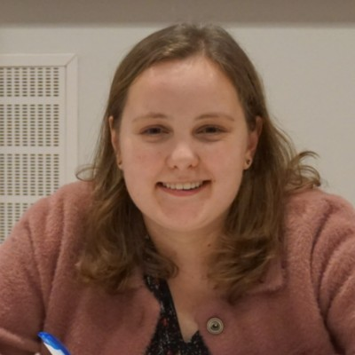

Ik ben Welmoed, 21 jaar en ik zit momenteel in het laatste jaar van HBO-ICT. Ik ben begonnen met deze studie omdat techniek en ICT mij interesseerde en ik hier meer over wilde weten. Ik vind het leuk om te ontdekken hoe iets in elkaar zit, iets wat een leuke eigenschap is binnen de ICT. Binnen de opleiding ben ik ook actief in de opleidingscommissie, hierbij houd ik mij bezig met het vertegenwoordigen van de student tegenover de opleiding. Ik vind dit leuk om te doen omdat ik hierdoor een kijkje achter de schermen krijg. Naast school houdt ik mij ook bezig met wielrennen en zwemmen. Ik vind het soms ook leuk om praktisch bezig te zijn, daarom werk ik naast mijn studie in een kledingwinkel. Daarnaast doe ik ook vrijwilligerswerk, ik help bij het uitzenden van de kerkdienst of breng oude mensen naar de kerk met de auto.
Ik ben een ICT-professional die geïnteresseerd is in software ontwikkeling en cyber security. Ik vind het belangrijk om zelfstandig, overzichtelijk aan het werk te gaan. Ik beschrijf mijzelf als een doorzetter, ik ga graag door totdat iets lukt. Ik ben sociaal ingesteld en vind goede communicatie en samenwerking belangrijk. Mijn missie is het leveren van kwalitatief werk dat van waarde is voor de ander en voor mijzelf, om bij te dragen aan een betere wereld. Ik wil bijdragen aan een betere wereld door software te ontwikkelen die van waarde is voor eindgebruikers, werkprocessen optimaliseert of efficiëntie toevoegt binnen teams. Ik vind het belangrijk om altijd te blijven ontwikkelen en te leren. Hierdoor blijf ik up-to-date binnen het werkveld en kan ik ervoor zorgen dat ik de beste oplossingen kan leveren. Ik hecht waarde aan een goede werk en privé balans, zodat ik gefocust en vol energie aan de slag kan.
Ik vind het belangrijk om een positieve bijdrage te doen aan deze wereld. Dit wil ik doen in mijn professionele leven door bij te dragen aan applicaties die de processen verbeteren. Ik vind het belangrijk dat applicaties aangepast worden op de eisen van mensen, zodat deze meerwaarde kunnen creeeren in de maatschappij. Als toekomstig cyber security expert wil ik ervoor zorgen dat de gegevens van mensen veilig blijven en dat alleen de benodigde informatie van personen wordt verzameld. Ik vind het hierbij belangrijk om mensen meer te vertellen over hoe zij hun data veilig kunnen houden.